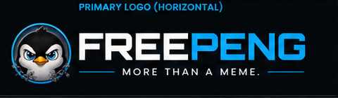
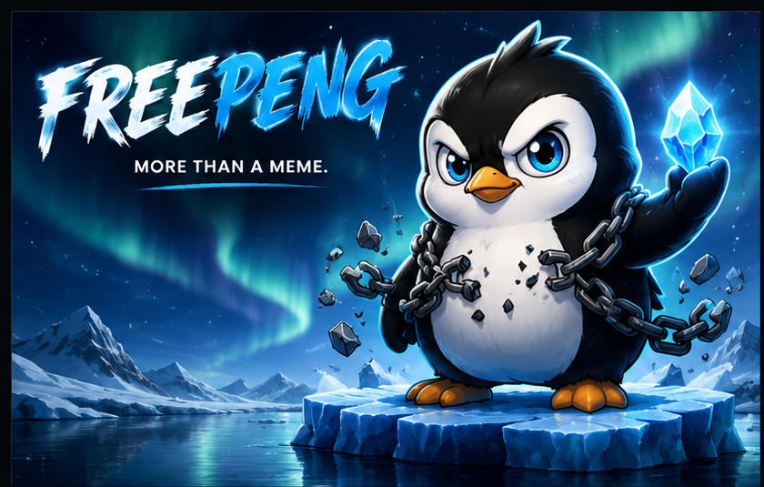
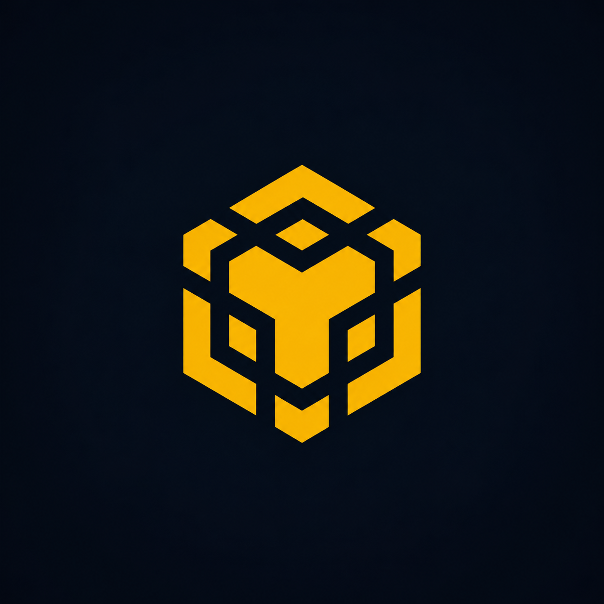

Total Supply

FreePeng is an original penguin-themed meme token project. We build in public, test before launch, and keep the community first.

Total Supply
Buy / Sell Tax

BNBSmart Chain
Token Symbol
1,000,000,000 FPG fixed supply planned for launch.
Built for BNB Smart Chain with testnet verification first.
Simple 0% buy and 0% sell tax model.
Contract address and verification links will be published publicly.
Website, GitHub, logo, mascot, and project identity.
OpenZeppelin ERC-20 contract, testnet deployment, and transfer tests.
BNB Smart Chain mainnet deployment, verification, and PancakeSwap liquidity.
Social channels, community campaigns, listings preparation, and future utilities.
The FreePeng whitepaper explains the story, tokenomics, roadmap, risk notice, and community-first principles.
Open WhitepaperNot yet. Testnet comes before mainnet.
No. FreePeng is a community project and not financial advice.
Yes. FreePeng is an independent fictional penguin character.